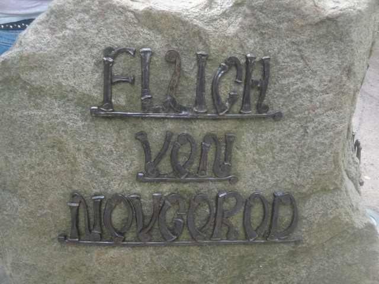
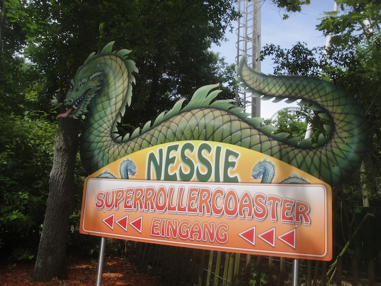
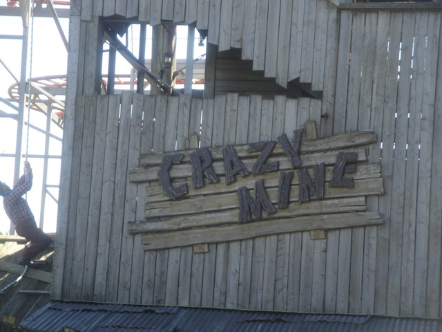
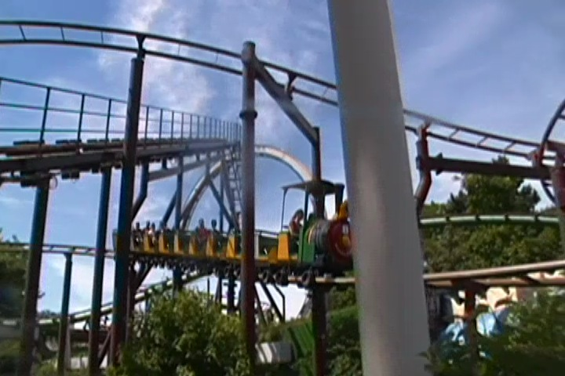
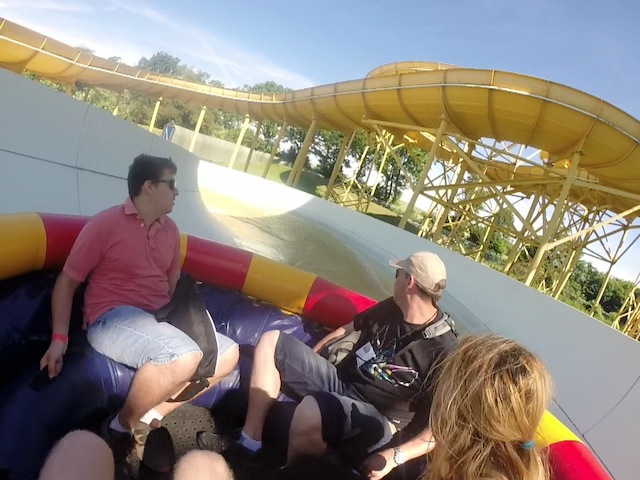

| |
Hansa Park Review

Hansa Park is a really great theme park. I know it's not exactly the most well known theme park in Europe, though I think that their new ride, Schwur des Kärnan, is getting them more attention (I have to go back to ride that). But compared to all the other parks in Europe, such as Europa Park, Tivoli Gardens, and Liseberg, it doesn't get ANYWHERE near the same amount of attention. OK, that's a bad example as all of those are the best parks in Europe. They're all amazing. Of course people are going to focus on those parks. But I really like Hansa Park. And I mean, I REALLY like the park. It's definetly up there as far as European Parks go. I mean, the park just has one of the best balances out of any park. And while it's only now starting to get recognized thanks to great new rides such as Fluch von Novgorod and I keep hearing great things about Schwur des Kärnan. But the park has always had a great balance and a bit of a history to it. I mean, you have to keep in mind. This was the original Legoland. I know it seems weird since it longer has anything to do with Legos, but its true. This came before the first Legoland still running, Legoland Billund. But even without the Legos, Hansa Park grew to have a very nice atmosphere and wide arrangement of rides. I can think of plenty of rides here at Hansa Park that are fairly rare and not at most other parks thanks to a lot of the retro rides they have. And of course, they have a bunch of really good modern day rides and coasters as well, and they theme everything extremely well to make Hansa Park a fantastic park experience and defiently one of the more underrated theme parks in Europe that more people should get out to soon.
Rollercoasters
There is a link to a review of all the Rollercoasters at Hansa Park.
Please keep in mind that there is no review of Schwur des Kärnan because it didn't exist when I last visited.
Top Coasters
Fluch von Novgorod Review

Good Coasters
Nessie Review

Family Coasters
Crazy Mine Review

Family/Kiddy Coasters
Rasender Roland Review

Schlange von Midgard Review

Flat Rides
Here are the reviews of all the Flat Rides at Hansa Park. Now the flat ride collection here is...interesting. Far from the best flat ride collection ever. But the flat rides here are...interesting. And unique. That's really the best way of putting it. All right. Let's start out with what may be the most unique flat ride. Spanish Glocke. Now it doesn't look that special. It just looks like an ordinary frisbee. Nothing really special about that. And it is. It's pretty much just a frisbee. But hey. It does have a really good program. This thing really spins. And its themed beautifully. It's themed to a big Spanish bell, and it really looks like one. But with that said, there are a couple problems with the ride. Primarily the fact that this ride has a lot of downtime and isn't open that often. And to make things worse, the capacity on this thing is AWFUL!!! So if you want to ride this (And it's really fun), be sure to get there EARLY!! I would've also talked about the Double Bayern Curve, but I just learned that they got rid of it. F*CK!!! That was the only one of those in existance!! And it was a lot of fun!!! *Sigh* At least I got to ride it. The only other flat ride I rode in the park was their pirate ship. There's nothing really special about it, but for some reason, it was really strong. I liked it. They also have a Looping Star, some chairswings, some teacups, a troika, and a carousel. Yeah, the flat ride collection isn't nearly as interesting as it used to be with the removal of not only the Double Bayern Curve, but some other flat rides they removed for Karnan (that was probably worth it, considering how good that looks).
 Yeah. You can see why this ride has capacity problems.
Yeah. You can see why this ride has capacity problems.
Water Rides
While there's no stand out water rides at Hansa Park or anything that's really anything special, they still have some decent water rides for you to ride. Let's start out with the one water ride in the park I managed to ride. Rio Dorado. The parks spinning raft ride. And sadly, this thing did not spin. AT ALL!!! It was honestly kind of slow and dull. Which is really dissapointing because I've heard some GREAT things about these rides and that they can spin a lot. But between this and the one at Parc Asterix, these rides are kind of dull to me. Maybe if I ride with some fat people, that'll do the trick. *Sigh* Oh well. The park also has a couple other water rides that I didn't ride. They have one of those Wet'N'Dry slides. Those are fun. And then this park has not one, but TWO log flumes. Yes, you counted that right. TWO log flumes. Double the Log Flumes. Double the fun. In hindsight, I probably should've ridden one of these log flumes. But hey. I was too busy enjoying the park. But hey. I'm sure those log flumes are fun.

Please gain more weight. I want this thing to spin.
Dining
The food at Hansa Park is...eh. It's not so much the typical amusement park food (at least the stuff I got wasn't), but it's also...far from the best. As far as European parks go, the food at Hansa Park is not among the better parks. The food that I ate was essentially just a big piece of meat on a stick. Now, there's nothing wrong with that. I love me some good meat on a stick. Particuarly beef. But it seemed a little dull. It certainly wasn't high grade meat. It was about as classy as the meat in a typical theme park burger. Just the meat only. And on a stick. Who knows what else is at the park. But I'm sure its good enough. Oh, and their doughnuts are also bland. Be warned of that (though the milkshakes are good).
 GRR!!! MEAT ON A STICK!!!
GRR!!! MEAT ON A STICK!!!
Theming and Other Attractions
Here are the reviews of all the other stuff at Hansa Park. As far as theming goes, it's one of the better themed European Parks. They have a Wild West area, as well as a Russia themed area. And they do a pretty good job. And that's just the area theming. Let me tell you that the theming on Fluch von Novgorod is freaking incredible. I mean, I don't want to give too much away because I review the ride up above, but the theming that that ride has is simply incredible. Hansa Park just goes all out in the theming on their rides. I mean, the park theming is nice and all, but it's all the theming of the actual rides that really gives this park a special touch. But to be fair, the park setting is really nice as well. The town outside the park is very quaint and almost like something like out of a storybook. As far as other stuff to do, Hansa Park actually has some intersting options. First off, they have another one of those play areas. Particuarlly, they have one of those giant bouncing pillows in the Wild West section. I love those things. I'm not sure what it is about them since they're basically just trampolines, but I really enjoy them. Though I think the pillow may also be gone to make room for Karnan. Meh, they're everywhere. Plus, they can just move the pillow. MOVE THE PILLOW!!! =) The other thing they have that while not nearly as common in Europe, but still popular enough is bread baking. Seriously, it's in the Wild West section and you can cook the bread over an open fire. All right. That's just freaking awesome. I didn't do it at Hansa Park, but a different park and it's freaking good. I'm sure there's even more stuff that I'm missing.
 Come to Hansa Park! We have bouncing pillows! =)
Come to Hansa Park! We have bouncing pillows! =)
In Conclusion
Hansa Park is definetly one of the better parks in Europe. I know this rarely got any attention, but thanks to big new coasters like Fluch von Novgorod and Karnan, this park is getting more regognized on the map and more people are paying attention to it. Yes, that's partially because Fluch von Novgorod is the best Euro Fighter easily, and while I haven't ridden Karnan yet, it looks amazing. But it's not just these two coasters that makes the park so good. It has plenty of other fun coasters, including a Schwarzkoph, which are sadly becoming quite rare. It has a couple good flat rides (though they really need to add another good one), some fun water rides, plenty of other attractions in the park, and all draped in really nice theming. Yeah. It's not Disney or Europa Park, but it's just really nice theming that you don't see in too many other parks. Honestly, all this park really needs is a good dark ride (I didn't realize that they didn't have one until I wrote this park review) and then the park would be pretty damn balanced. So yeah. Definetly look into that for the future. But even without a dark ride, this park is freaking great. Definetly give them a visit if you're in Germany or in Scandinavia and want to head down for a visit. It's a really good park that you should check out sometime soon.
Enthusiast FAQs.
*Are there kiddy coaster restrictions? - No. There are no restrictions for any of the kiddy coasters (unless that new one they're building has some. But I doubt it).

Tips
*Make sure you get plenty of rides on Fluch von Novgorod and Karnan.
*Get to Spanish Glocke early if you want to ride it. The capacity on it is HORRIBLE!!
*Don't treat Hansa Park as a credit whoring stop.
*Have Fun!!!
Theme Park Category:
Theme Park
Location
Sierksdorf, Schleswig-Holstein, Germany
Last Day Visited
June 17, 2014
Video
I didn't shoot enough video to make a Hansa Park video (at least not a good one). I'm sure I'll get enough footage next time.
Complete Update List
2014
TPR's Scandinavia Trip
Here's a link to the parks website.
Home
|